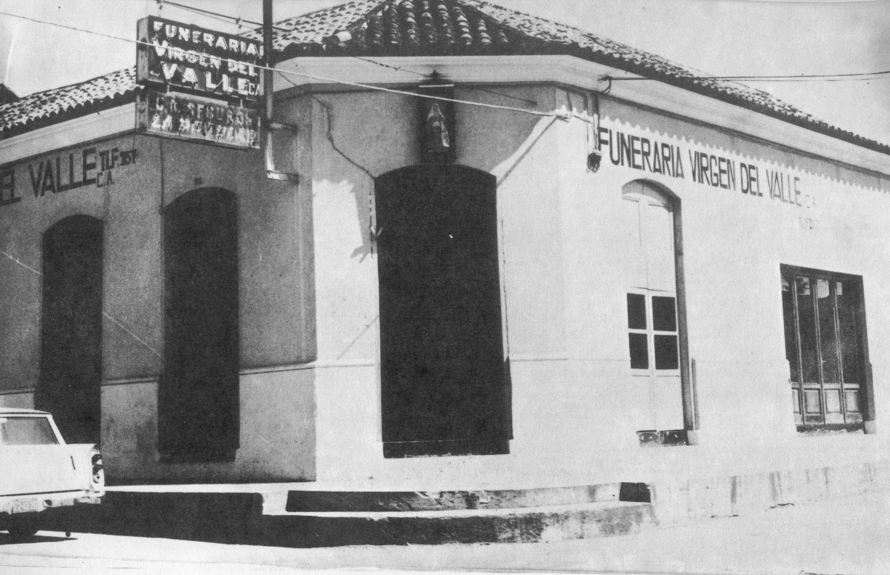

Misión
Ofrecer un servicio funerario de excelencia que brinde la paz espiritual y tranquilidad personal necesaria en momentos difíciles.
Una trayectoria construida sobre la confianza, el respeto y el acompañamiento a las familias venezolanas.
Una trayectoria construida sobre la confianza, el respeto y el acompañamiento a las familias en uno de los momentos más íntimos de la vida.
“Brindando paz espiritual y tranquilidad en los momentos más difíciles por más de siete décadas.”

Ofrecer un servicio funerario de excelencia que brinde la paz espiritual y tranquilidad personal necesaria en momentos difíciles.
Fortalecer nuestro liderazgo nacional a través de la mística, buena atención, responsabilidad y absoluta seriedad.
Un grupo funerario con cobertura en varias regiones del país: sede principal en Cumaná, con agencias en Puerto La Cruz, Anaco y atención en el Distrito Capital.
Planificar con anticipación permite decidir con calma y proteger la tranquilidad de la familia. Un asesor puede explicarle las alternativas disponibles según sus necesidades, sin compromiso.